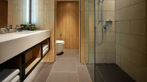
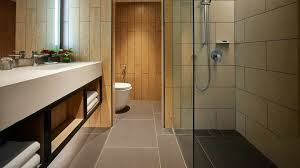
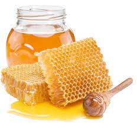
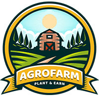
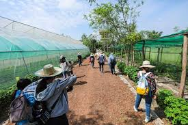
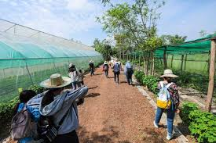

Project 1 Hanana Resort
Hanana Resorts are typically located in scenic or exotic destinations and offer comprehensive amenities, including
accommodation, dining, entertainment, and recreational activities. Hanana Resort provide Bed and Breakfast (B&B)
which are cozy, personalized accommodations often in residential properties, offering a home-like atmosphere and breakfast to guests.
 


Project 2 Hanana Stingless Bee Honey
Honey is a natural sweet substance produced by bees from the nectar of flowers. It has been used by humans for centuries as a
sweetener, food source, and for its potential health benefits. Stingless bee honey is often described as having a unique and complex flavor
profile, influenced by the diverse range of flowers the bees forage from.It is typically more liquid than traditional honey produced by
honeybees and may have a tangy or sour taste, depending on the plant species.The color of stingless bee honey can vary from clear to dark
amber, again depending on the floral sources. Honey is often used as a natural remedy for sore throat, cough, and wound healing.
Its antioxidant and antibacterial properties make it a popular ingredient in natural remedies.



Project 3 Hanana Agro Farm
Hanana Agro Farm focused on Crop Farms which are focus primarily on cultivating crops such as grains, fruits, vegetables, and nuts.
The main plant we focused on are durian which is very popular and high demands escpecially in Malaysia and worldwide.


 
